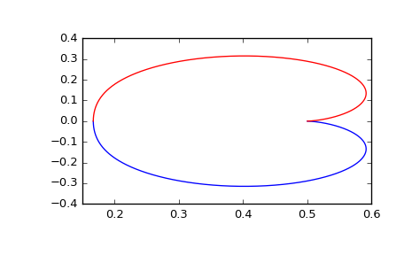

scipy.signal.dfreqresp¶
-
scipy.signal.dfreqresp(system, w=None, n=10000, whole=False)[source]¶ Calculate the frequency response of a discrete-time system.
Parameters: system : an instance of the
dlticlass or a tuple describing the system.The following gives the number of elements in the tuple and the interpretation:
- 1 (instance of
dlti) - 2 (numerator, denominator, dt)
- 3 (zeros, poles, gain, dt)
- 4 (A, B, C, D, dt)
w : array_like, optional
Array of frequencies (in radians/sample). Magnitude and phase data is calculated for every value in this array. If not given a reasonable set will be calculated.
n : int, optional
Number of frequency points to compute if w is not given. The n frequencies are logarithmically spaced in an interval chosen to include the influence of the poles and zeros of the system.
whole : bool, optional
Normally, if ‘w’ is not given, frequencies are computed from 0 to the Nyquist frequency, pi radians/sample (upper-half of unit-circle). If whole is True, compute frequencies from 0 to 2*pi radians/sample.
Returns: w : 1D ndarray
Frequency array [radians/sample]
H : 1D ndarray
Array of complex magnitude values
Notes
If (num, den) is passed in for
system, coefficients for both the numerator and denominator should be specified in descending exponent order (e.g.z^2 + 3z + 5would be represented as[1, 3, 5]).New in version 0.18.0.
Examples
Generating the Nyquist plot of a transfer function
>>> from scipy import signal >>> import matplotlib.pyplot as plt
Transfer function: H(z) = 1 / (z^2 + 2z + 3)
>>> sys = signal.TransferFunction([1], [1, 2, 3], dt=0.05)
>>> w, H = signal.dfreqresp(sys)
>>> plt.figure() >>> plt.plot(H.real, H.imag, "b") >>> plt.plot(H.real, -H.imag, "r") >>> plt.show()
- 1 (instance of